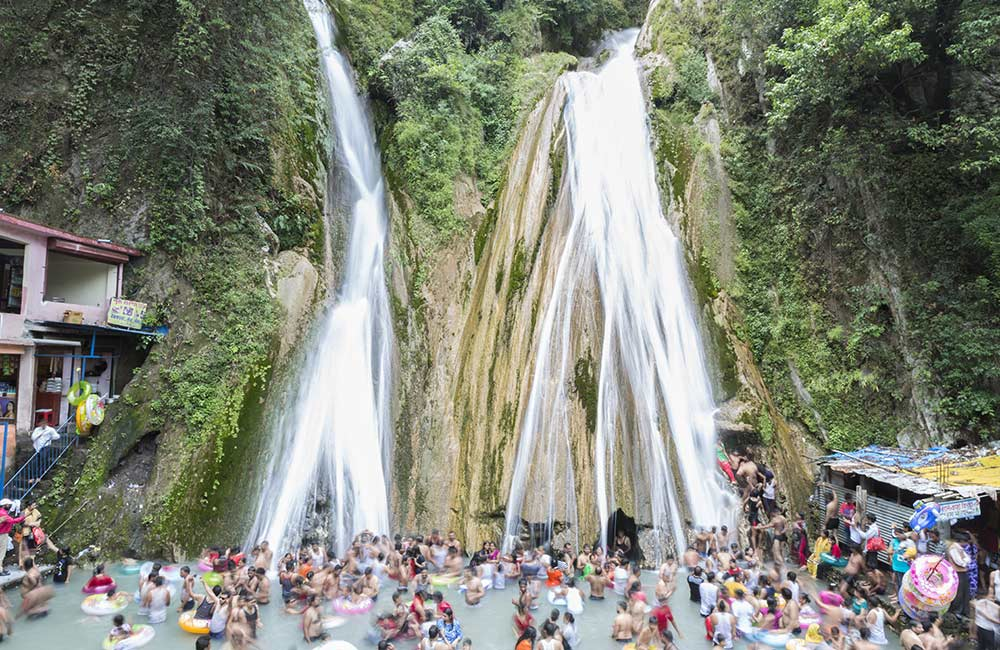
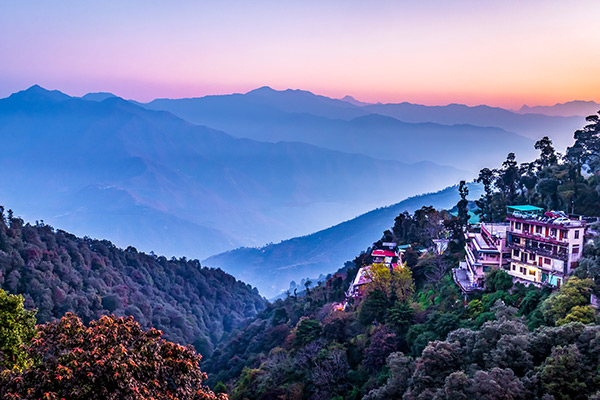
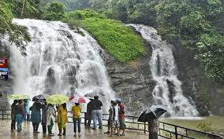

Mussoorie is a hill station and a municipal board, near Dehradun city in the Dehradun district of the Indian state Uttarakhand. It is about 35 kilometres (22 mi) from the state capital of Dehradun and 290 km (180 mi) north of the national capital of New Delhi. The hill station is in the foothills of the Garhwal Himalayan range. The adjoining town of Landour, which includes a military cantonment, is considered part of "greater Mussoorie", as are the townships Barlowganj and Jharipani.[3] Mussoorie is at an average altitude of 2,005 metres (6,578 ft). To the northeast are the Himalayan snow ranges, and to the south, the Doon Valley and Shiwalik ranges. The second highest point is the original Lal Tibba in Landour, with a height of over 2,275 m (7,464 ft). Mussoorie is popularly known as The Queen of the Hills